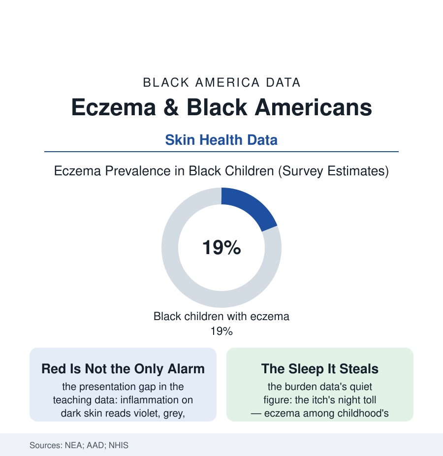

Black Public Health
The Itch in the Data: Eczema and Skin Read on Its Own Terms
Eczema hits Black children harder and is read worse on dark skin by the textbooks that teach it — the dermatology file's training-data problem, measured in rashes. The eczema file.

Eczema — atopic dermatitis — is childhood's most common skin disease, and its American burden is racially sorted at every step the surveys measure: Black children carry higher prevalence, more severe disease, more sleep destroyed and school missed — and a diagnostic tradition trained, quite literally, on the wrong photographs. This article reads the eczema file.
The Burden and the Misreading
The prevalence data open the file: the national surveys placing eczema in roughly one in five Black children, above the national rate, with the severity distribution skewed worse — the persistent, treatment-resistant cases concentrating in the Black and low-income rows of the cohort studies, the urban environment's contributions (the pollution file's skin chapter, the housing file's dust and pests, the stress physiology of the children's health data) each measured in the literature. Then the file takes its distinctive turn, into the examination room's eye: eczema's diagnostic signs were codified in atlases photographed overwhelmingly on light skin, where inflamed skin announces itself in red — while on dark skin the same inflammation presents violet, grey-brown, or simply darker, its texture (the lichenified, papular forms the dermatology literature notes are more typical in Black patients) reading as a different disease to the untrained pattern-matcher. The consequences are measured, not impressionistic: the studies of diagnostic accuracy by patient skin tone, the severity scores (built on erythema — redness — as a primary axis) systematically under-scoring dark skin in the validation research, the under-scoring flowing directly into the treatment and trial-eligibility decisions the scores gate — the biologic era's door keyed to a number that this population's skin is graded down on. It is the melanoma file's lesson in a milder register and at far larger scale: the reference data were drawn from one population and universalized, and the correction — the diverse atlases, the skin-of-color clinics and curricula of the recent years — is arriving on the same slow schedule as the others in this section.
The workforce row belongs in this file too: dermatology remains among the least diverse specialties in the physician data — Black dermatologists a few percent of the field — and the patient-preference and outcome studies record what that costs and what its correction buys (the skin-of-color centers at the academic hospitals posting waiting lists that measure the unmet demand directly, the teledermatology photo banks and the AI diagnostic tools now being audited, in the recent validation literature, for exactly the training-set skew this file describes in the textbooks — the machines inheriting the atlas unless the atlas is rebuilt first, which the specialty's reformers, to their credit, now say in their own journals).
The Management Ledger
The treatment data carry the disparity forward in the usual handwriting: Black children with eczema see specialists less and emergency departments more in the claims analyses (the access file's signature — the flare managed at midnight because the dermatologist's panel had no room), receive the advanced therapies at lower rates in the pharmacy data even at equal measured severity (the under-scored severity of the first section doing its quiet arithmetic), and face the moisturizer-and-steroid regimen's costs and complexities across the food-and-housing files' terrain (the bleach baths and wet wraps prescribed into homes whose water, space, and laundry the housing file describes). The newer science is rewriting the disease's own geography in this population's favor for once: the genetic studies finding the skin-barrier mutations' distribution differing by ancestry — the European filaggrin story explaining less of Black eczema, the immune-pathway profiles arguing for pathway-matched therapy rather than one protocol for all — the research direction of precision dermatology in which this population's difference is, finally, data rather than deviation. The burden's ledger closes on the quality-of-life instruments: the itch's theft of sleep (the family sleep data's eczema chapters — parents up at night across the whole household's next day), the visible difference's social tax on the schoolchild, the adult file's hand eczema ending certain work in the employment data. A disease the waiting room calls minor, itemized as a childhood tax levied by the skin, the textbook, and the appointment book at once.
Reading the Eczema Data
The eczema file's moral is written on the body's largest organ: a medicine is only as accurate as the skin it learned on. The surveys count the rashes. The new atlases — photographed, at last, in the full range of the patients — are the correction being printed, one image at a time, into the profession's eye.
More in Black Public Health
Hypertension Among Black Adults: Prevalence, Control, and Consequences
About 55 percent of Black adults have hypertension — the highest rate of any U.S. group. Prevalence, onset, control, and the stroke, heart, and kidney consequences in the data.
Diabetes Among Black Adults: Prevalence and Complications
Nearly one in five Black adults has diabetes, diagnosed or undiagnosed — and its complications fall with particular weight. The CDC data on prevalence, control, and outcomes.
Black Life Expectancy: The Gap at Birth and Its Causes
Black life expectancy at birth is about 73 years, roughly five years below the national figure — the summary measure of every health gap in this section. The CDC data.
Source: National Eczema Association; American Academy of Dermatology; National Health Interview Survey; Journal of the American Academy of Dermatology research.